Монголын олборлох үйлдвэрийн зураглал нь онлайн хэлбэрээр хийгдсэн ба олон нийт танилцах боломжтой, харилцан шүтэлцээ бүхий зураглал бөгөөд газрын тос болон уул уурхайн олборлох үйлдвэрүүдэд төвлөрсөн болно. Энэхүү вэбсайтыг бодлого боловсруулагчид, иргэд болон засгийн газрын ажилтнууд өөрсдийн зураглалыг гарган солилцох эсвэл энэхүү зураглалыг татан авч, уул уурхай, газрын тосны үйл ажиллагаа, орлого болон нийгэм эдийн засгийн байдлын харилцан шүтэлцээний талаар мэдээлэл авах боломжтой юм. Энэ баримт бичиг нь зураглалын тухай оршил болон мэдээлэлийг эндээс хэрхэн авах тухай зааварчилгыг агуулж байгаа болно.
Click here to download a PDF version of this how-to guide.
Зураглалын хуудасанд орохын тулд энд дарна уу.
ГАРЧИГ
СОЛИЛЦУУЛАГЧИЙН ТУХАЙ
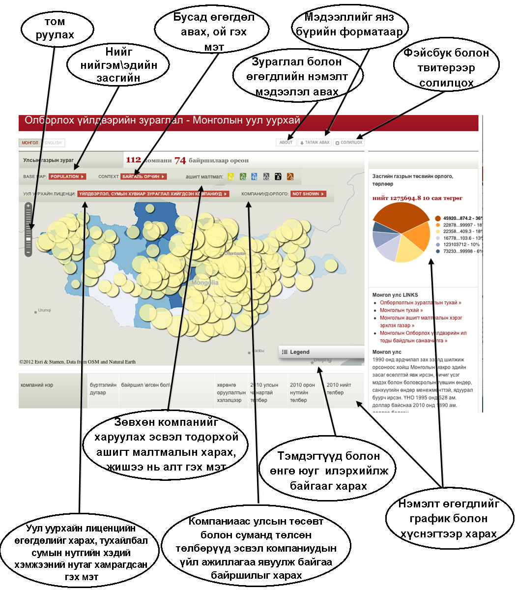
ЭХЛЭХ: СОЛИЛЦУУЛАГЧИЙГ ХЭРХЭН АШИГЛАХ
СОНИРХОГЧ БАЙГАА ХЭСГИЙН ЗҮГ ЗАЛАХ: ТОМРУУЛЖ ХАРАХ
Курсорыг зураглал дүүгээр залж, өөрийн сонирхож байгаа газар хүртэл чирнэ. Тэгээд тухайн мэдээлэлийг томруулах эсвэл багасгахаар хоёр хэлбэрээр авч болно. Та бүхэн хулганы залуур \маус\ эсвэл холигч хэсгийг эсвэл газрын зураглалын цонхны зүүн дээд хэсэгт байрлах хэрэглийгашиглаж болно. Томруулах цонхонд байгаа “ + “ товчлуурыг дарж томруулах ба “ – “ товчлуурыг дарж хэмжээг багасгаж болох ба эсвэл цагаан цонхон дээр курсорыг дээш, доош чирэх байдлаар томруулж, багасгаж бас болно.
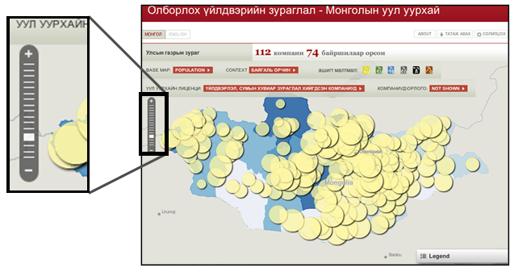
ТАНИХ ТЭМДЭГҮҮДИЙГ ГАРГАХ
Зураглал дээрхи өнгө болон хэмжээ нь ихэвчилэн тухайн мэдээлэлтэй таарч байгаа болно.Таних тэмдэгүүд нь тухайн тоо ямар өнгө болон хэмжээтэй таарахыг хэлж өгнө. Та бүхэн зураглалын цонхны баруун дор байрлах “таних тэмдэг” гэсэн дөрвөлжинд товшиж, таних тэмдэгүүдийг нээнэ.Хэрэв бүх зүйл таних тэмдэгүүдээр гарч ирэхгүй бол таних тэмдэгийн цонхны дор байрлах гулсах дөрвөлжинг ашиглан гаргаж болно.
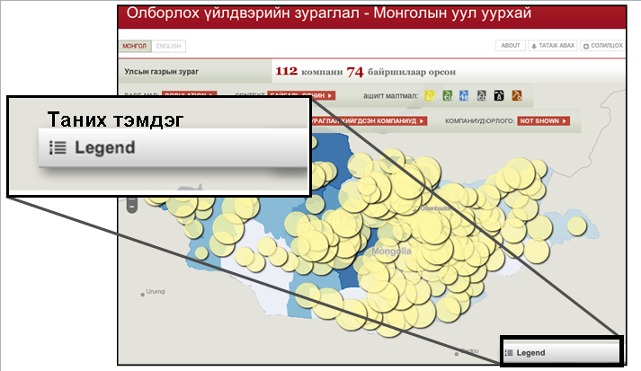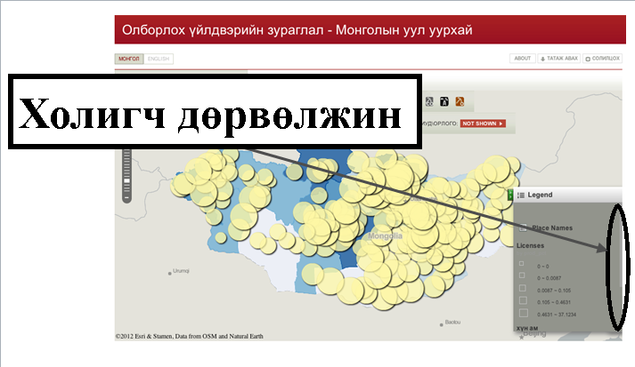
ДАВХРАГУУДЫГ НЭЭХ БА ХААХ
Чухам ямар өгөгдөл дээр ажиллаж байгаагаас хамаарч, чухам юуг нь сонгон нээхэд хэрэглэх хэд хэдэн арга зам байгаа. Дор харуулж байгаа хүснэгтээс бүлэг цэс бүртэж хэрхэн ажиллахыг харж болно. Дор хуруулж байгаа цэсийг ашиглан, уул уурхай болон газрын тосны тухай өгөгдөлийг хэрхэн нээх арга замыг сонгох боломжтой. Лиценци эсвэл төлбөртэй холбогдсон өгөгдөлүүд, эсвэл компаниудын үйл ажиллагаа явуулж байгаа газруудыг сумын түвшинд харах боломжтой. Жишээ нь, орон нутагт хийсэн төлбөрийг харах бол тухайн дугуй том байвал төлбөрийн хэмжээ их гэсэн үг юм.
Сумын хэмжээнд хураангуйлан гаргасан уул уурхайн хайгуулын лиценцийн статистик мэдээг харж болох ба эсвэл хэд хичнээн компани төлбөр хийсэн тухай, хаана үйл ажиллагаагаа явуулж байгаа болон уул уурхайн үйл ажиллагаанаас сумын төсөвт орсон орлогын хураангуйг харж болно. Түүнчилэн та бүхэн зөвхөн сонирхож байгаа ашигт малтмалыг гарган харж болох ба жишээ нь зөвхөн газрын тосыг гаргах, эсвэл зөвхөн зэс, алт хоёрыг гаргах гэх мэт. Мөн суурь зураглалд ямар нийгэм эдийн засгийн үзүүлэлтүүд байгаад тохиргоо хийж болно.
Лиценцийн өгөгдөл: Сумын хэмжээний лиценцитэй холбоо бүхий статистик мэдээ авахын тулд зураглалын цонхны дээр байгаа хоёрдохь дөрвөлжин дэх уул уурхайн лиценци гэсэн цэсийг гарган ашиглана. Эндээс та бүхэн явуулж байгаа үйлдвэрлэл, хайгуулын болон бүх лиценцийн тоо мэдээ болон эндээс хамрагдаж байгаа сумын нутгийн хувь, эсвэл суманд давхцаж байгаа лиценцүүдийн тооны өгөгдөлийг бас гарган үзэж болно. Дугуйн хэмжээ томрох тусам хамрагдаж байгаа газрын хэмжээ ихсэнэ. Лиценци болон компани\орлогын өгөгдөлийг нэг зэрэг үзэх боломжгүй.
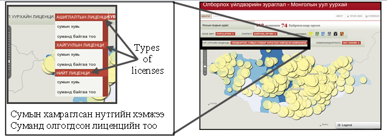
Компани болон орлогын тухай өгөгдөлүүд: Цэсийн Орлого\компаниуд гэсэн шошго дээр очиж, орон нутаг эсвэл улсын төсөвт оруулсан төлбөрийг сум бүрээр эсвэл компаниуд үйл ажиллагаа явуулж байгаа сумдыг харж болно. Мөн компаниудаас орон нутагт өгсөн хандивуудыг эндээс харж болно. Харин лиценци болон компани\орлого өгөгдөлийг нэг зэрэг харах боломжгүй.
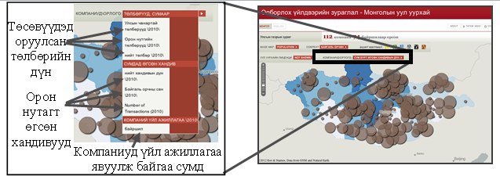
Өгөгдөлүүдийг ялгах: Орлого эсвэл компаний тухай мэдээллийг үзэж байхдаа, зөвхөн тодорхой ашигт малтмалыг, жишээ нь алт эсвэл зэс, сонгон үзэж болно. Та бүхэн өөрийн үзэхийг хүсэхгүй байгаа ашигт малтмалыг хааж болно.
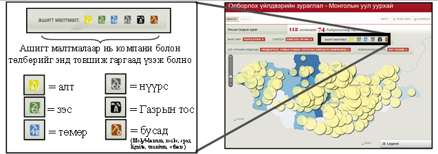
Үзүүлэлтүүдийн өгөгдөл: Зураглалын цонхны дээр байгаа дөрвөлжингийн зүүн дээд талд байгаа “Суурь зураглал” гэсэн шошго дээр очиж, нярайн эндэгдэл эсвэл хүн амын мэдээллийг авч болно. Нэг удаад нэг л үзүүлэлттэй танилцаж болно.
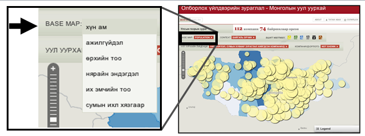
НЭМЭЛТ ӨГӨГДӨЛ АВАХ ДҮРСҮҮДИЙН ТУХАЙ
Зуроаглал дээрхи дүрсүүд нь ил байгаа мэдээлэлээс гадна асар их хэмжээний өөр мэдээлэлүүдийг агуулж байгаа болно. Тэдгээр өгөгдөлтэй танилцахын тулд сонирхож байгаа дүрс дээр маусаар тогшоно \дүүрэг эсвэл уурхай гэх мэт\. Ингэхэд гарч ирэх цонх нь төрөл бүрийн бүлэг мэдээлэлүүдийг агуулж байгаа ба тухайлбал “төлбөр”, “ашигт малтмал” болог “компаниуд”, сумын түвшингийн төлбөрүүдийн хураангуй гэх мэт. Бололцоотой нөхцөлд, нэмэлт мэдээлэлтэй холбогдох болон бусад вэбсайттайд орж болно.
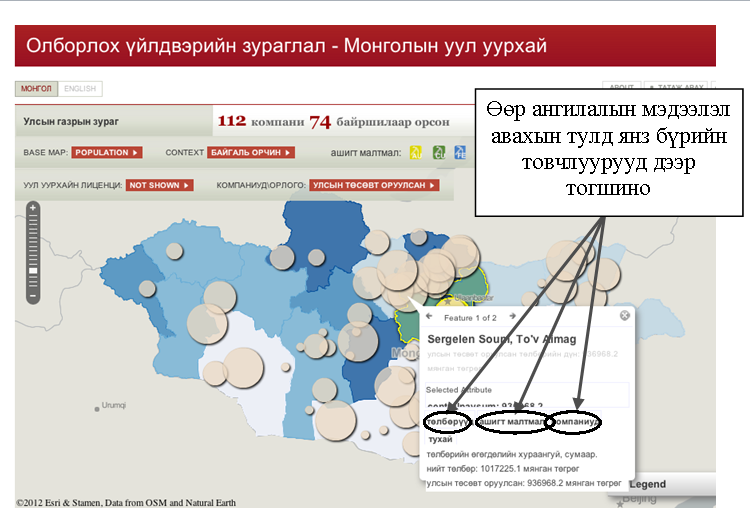
ЯМАР МЭДЭЭДЭЛҮҮДИЙГ ЗУРАГЛАН ОРУУЛСАН БЭ
Энэхүү зураглалд дараахь өгөгдөлийн багцуудыг бэлтгэсэн ба эдгээр өгөгдөлүүдтэй холбогдсон нэмэлт мэдээллийг эндээс авна уу: .
Уул уурхайн мэдээлэл
• Ашиглалтын болон хайгуулын лиценцид орсон сумын газар нутаг
• ОҮИС-д тайлагнадаг компаниудын үйл ажиллагаа явуулж байгаа газар
• Сум бүрийн оиценцийн тоо
• Хөрөнгө оруулалтын хэлэлцээр (олдсон нь)
Санхүүгийн мэдээлэл
• Орон нутгийн төсөвт оруулсан төлбөр (2010)
• Компаниудаас улсын төсөвт оруулсан төлбөр (2010)
• Компаний бүртгэлийн дугаар
Нийгэм эдийн засгийн үзүүлэлтүүд
• Аймгийн хүн ам •
Аймгийн нярайн эндэгдэл
• Аймгийн ажилгүйчүүдийн тоо
• Их эмч нарын тоо, аймаг бүрээр
• Өрхийн тоо, аймаг бүрээр
Сэдэвчилсэн өгөгдөлүүд
• Тусгай хамгаалалтын газрууд
• Ойтой газрууд
• Сумын хил хязгаар
ЗУРАГЛАЛЫГ СОЛИЛЦОХ
Та одоо бол өөрийнхөө зураглалыг хэд хэдэн арга замаар бусадтай солилцож болно. Та зураглалыг Фэйсвук эсвэл Твитерээр солилцож болно. Солилцох цэсэнд очиж, маусыг тогших ба тэндээс чухам замаар өөрийн үзэж байгаа зураглалыг солилцохыг сонгоно.
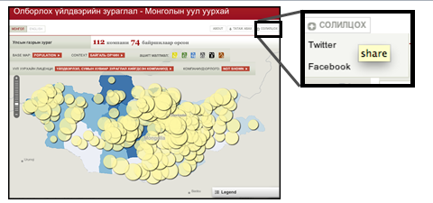
Ирээдүйд зураглалын тэр жигээр нь татаж авах эсвэл вэбсайтаас шууд хэвлэх хувилбарууд гарна. Тэр болтол, зураглалыг screenshot-оор буулган авч Микрософт эсвэл слайдад хуулан буулгаж болно. Үүнийг хийхийн тулд, “Alt + Print Screen” гэж дараад, дараа нь Микрософт эсвэл слайдад орж “ Ctl + V” дарна. Ингэсний дараа та бүхэн зураглалыг хадгалах эсвэл хэвлэж болно.
ӨГӨГДӨЛИЙГ ТАТАЖ АВАХ
Зураглалд байгаа өгөгдөлүүдийг вэбсайтаас шууд татан авч болно. Өгөгдөл нь ОҮИС –ын shape файл эсвэл comma-separated value \CSV\ файлаар байгаа болно. Shape файл нь орон зайн мэдээллийг агуулж байгаа ба шууд GIS программдь тухайлбал ArcGIS эсвэл онлайн зураглал платформд, тухайлбал www.geocommons.com –д шууд нэмэн оруулж болно. CSV файлуудыг Excel-ээр хялбархан нээж болох ба уртарга болон өргөрөгийг өгөгдөл бүрээр харах боломжтой. Та бүхэн ийнхүү өгөгдөлийг хүснэгтээр Excel ашиглаж, эсвэл CSV-ийг Google Earth эсвэл GeoCommons зэрэг өөр зураглалын платформд татаж, утрага болон өргөрөгийг хаана харуулахыг программд хэлэх хэрэгтэй. Ингэсэнээр, та өгөгдөлийг бусадтай солилцох боломжтой болох ба өөрийн хүссэн платформд оруулж болно.
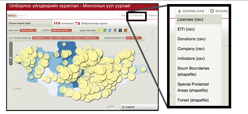
НЭМЭЛТ МЭДЭЭЛЭЛ
Хэрэв та бүхэн эдгээр өгөгдөлүүдийг хаанаас авсан, хэрхэн цуглуулсан эсвэл яаж боловсруулсан болон зураглалыг бэлтгэсэн талаар нэмэлт мэдээлэл авахыг хүсвэл Олборлох үйлдвэрийн төслийн зураглалд зориулсан -ын “Abont” хуудаснаас олж авч болно.
Үүнээс гадна, зураглалыг хэрхэн илүү ашигтай, шаардлага хангасан болгох талаар та бүхний саналыг хүлээн авна гэж найдаж байна. Та бүхэнд ямар нэг асуулт эсвэл санал байвал Michael Jarvis –тай (mjarvis@worldbank.org) холбогдоно уу.